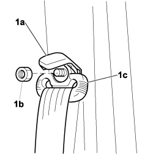
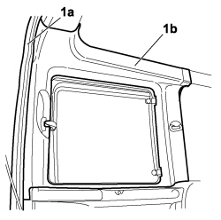

7040H50 REAR SIDE PANEL (ONE) LEFT OR RIGHT - R.R.
- Path
- Procedures > 70 FITTINGS > 7040 BODYSHELL INTERIOR TRIMS AND FITTINGS > 7040H roof panel lining > 7040H50 REAR SIDE PANEL (ONE) LEFT OR RIGHT - R.R.
- Kind
- repair procedure (removal / refitting; the operation number is the code)
- Applies to
- engines: 1.4 8v, 1.6 16v, 1.3 JTD 16V, 1.9 JTD 8V; all production periods
- Interactive page
- https://sloeber94.github.io/elrnDB-fDbl/en/#/223000201
Applies to: engines: 1.4 8v, 1.6 16v, 1.3 JTD 16V, 1.9 JTD 8V; all production periods
 Removing
Removing
 Refitting
Refitting1. Prise up plastic protection (1a), unscrew nut (1b) and position front seat belt upper link (1c) to one side.

Applies to: engines: 1.4 8v, 1.6 16v, 1.3 JTD 16V, 1.9 JTD 8V; all production periods
1. Gently prise up the seal (1a) for the rear door housing, prise up the rear panel (1b) and remove it from the vehicle.

Applies to: engines: 1.4 8v, 1.6 16v, 1.3 JTD 16V, 1.9 JTD 8V; all production periods
Refitting
Removing- Check that the rear side panel is not damaged.
- Position the rear panel in its seat and secure by pressing the anchorage stud.
- Fit the rear door housing seal.
- Position the seat belt link in its seat and tighten the nut.
- Close the plastic protection.